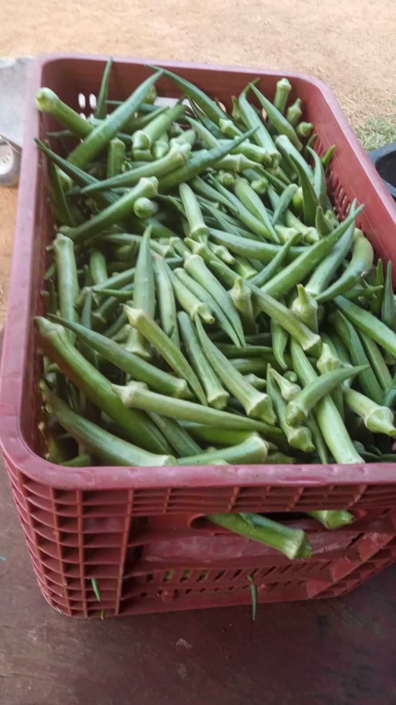

Bem-vindo à Horta Dois Irmãos
Uma horta familiar localizada em Chupinguaia, Rondônia, comprometida em fornecer alimentos frescos e saudáveis.

Localização no Mapa
A Horta Dois Irmãos está localizada em Chupinguaia, Rondônia. Veja no mapa abaixo:
Conheça Nossa Horta
Veja algumas imagens da nossa produção.

Quiabo

Alface

Couve

Pimentão
Benefícios da Agricultura Urbana
Agricultura urbana contribui para a saúde, sustentabilidade e conexão com a natureza. Saiba mais sobre nossa missão.